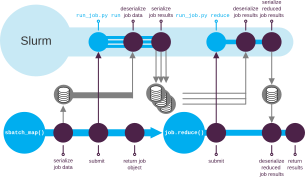

Parameter space discovery via slurm#
This module allows submitting a python callback as a slurm job array where each individual job runs the callback with a different set of parameters.
Step 1: Define a callback and the parameter space
from typing import Any
import numpy as np
from numpy.typing import NDArray
from engibench.problems.beams2d import Beams2D
def run_job(config: dict[str, Any]) -> NDArray[np.float64]:
p = Beams2D()
design, _ = p.optimize(config=config)
return design
parameter_space = [
{
"config": {
"volfrac": volfrac,
"forcedist": forcedist,
}
}
for forcedist in [0.0, 0.5]
for volfrac in [0.1, 0.25, 0.8]
]
Step 2: Specify arguments to be passed to slurm:
from engibench.utils import slurm
slurm_args = slurm.SlurmConfig(runtime="1:00:00")
Step 3: Submit a slurm job array
job = slurm.sbatch_map(
run_job,
args=parameter_space,
slurm_args=slurm_args,
)
For example this would submit a slurm array with 6 elements running
run_job(config={"volfrac": 0.1, "forcedist": 0.0}) # element 1
run_job(config={"volfrac": 0.25, "forcedist": 0.0}) # element 2
run_job(config={"volfrac": 0.8, "forcedist": 0.0}) # element 3
run_job(config={"volfrac": 0.1, "forcedist": 0.5}) # element 4
run_job(config={"volfrac": 0.25, "forcedist": 0.5}) # element 5
run_job(config={"volfrac": 0.8, "forcedist": 0.5}) # element 6
By default, sbatch_map() submits the job array in the background. That means that the execution flow of the python script will continue while the jobs are running.
If the calling python scripts needs to load results from the jobs, wait=True can be passed to sbatch_map(). In this case the call to sbatch_map() will block until all jobs have completed.
Results of a submitted job also can be either “reduced” or saved automatically:
Step 4a: Reduce results from multiple job array elements
reduced = job.reduce(list, slurm_args=slurm_args) # Collect all results to a list
# To save resources, to render the docs no actual optimization is performed.
# Instead optimize() is replaced by a method returning zeros:
print(reduced) # doctest: +ELLIPSIS
[array([[0., ..., 0.]], shape=(100, 50)), ...]
Step 4b: Save all results in one pickle archive
job.save("results.pkl", slurm_args=slurm_args)
job.save() will submit another slurm job using slurm_args (can be chosen independently from the arguments passed to sbatch_map()) which will wait until all parallel jobs submitted by sbatch_map() have completed.
The module contains a convenience wrapper around pickle.load() to load result archives:
results = slurm.load_results("results.pkl")
Note
In contrast to sbatch_map(), job.save() and job.reduce() are blocking.
The only reason that sbatch_map() is non-blocking is to make it possible to chain this call with job.save()/ job.reduce().
If however wait=True is passed to sbatch_map(), the call will be also blocking, in which case chaining with job.save() or job.reduce() is not possible.
Error handling#
Errors occurring during a job will be handled as good as possible.
sbatch_map()/job.reduce() workflow: sbatch_map() will try to pass all results collected from sbatch_map() to the reduce callback, passing a JobError instances for every failed job. This gives the callback the opportunity to handle failed jobs itself. If the callback does not handle failed job, sbatch_map() will raise a JobError containing information about all failed jobs. If the callback raises an exception on its own, sbatch_map() will raise a JobError wrapping the occurred error.
sbatch_map()/ job.save() workflow: any failed job will produce a pickle archive containing the exception instead of a result.
Technical details#
The actual slurm job array will run instances of engibench/utils/slurm/run_job.py. The data to be processed will be serialized by sbatch_map() and deserialized by run_job.py using pickle.
This also includes the callable itself.
The pickle archive will contain the name of the module where the callable is defined together with the name of the callable.
If the callable is a bound method of a class instance, the arguments needed to reconstruct the class instance are serialized as well.
By default pickle only manages to deserialize callables defined in python modules which are reachable via PYTHONPATH.
To also allow python modules not reachable via PYTHONPATH, engibench.utils.slurm has an enhanced serializing mechanism (engibench.utils.slurm.MemorizeModule).
Note
As deserializing works via module name, callable name and arguments, the callable must be defined at the toplevel of the module and cannot be a python object which is returned by a factory function.
The execution flow is depicted in the following figure. The execution flow of sbatch_map() + save() is a bit simpler - it does not need the final deserializing step from slurm back to the calling script.

Execution flow of sbatch_map() followed by reduce()#
API#
- engibench.utils.slurm.sbatch_map(f: Callable[[...], R], args: Iterable[dict[str, Any]], slurm_args: SlurmConfig | None = None, group_size: int = 1, work_dir: str | None = None, *, wait: bool = False) SubmittedJobArray[source]#
Submit a job array for a parameter discovery to slurm.
The returned
SubmittedJobArrayobject can be used to start a post processing job which will run after all jobs of the array are done.f- The callable which will be applied to each item in args.args- Array of keyword arguments which will be passed to f.slurm_args- Arguments passed to sbatch.group_size- Sequentially process a number of group_size jobs in one slurm job.wait- Wait until all job array elements have completed. This is useful if neitherSubmittedJobArray.save()notSubmittedJobArray.reduce()is required after submitting the job array.
Details: The individual jobs of the jobarray will be processed in individual python instances running the engibench.utils.slurm.run_job standalone script.
- class engibench.utils.slurm.SubmittedJobArray(job_id: str, work_dir: str, n_jobs: int)[source]#
Representation for a submitted slurm job array.
- reduce(f_reduce: Callable[[list[R]], S], slurm_args: SlurmConfig | None = None, size_limit: int | None = 10000000) S[source]#
Reduce the results of a slurm job array.
The return values of the callable f passed to
sbatch_map()will be collected into a list and passed as the single argument to f_reduce. After running f_reduce as a slurm job, its return value will be passed back and will be the return value of this method.To prevent larger workloads running on a login node, this function will raise an exception if the resulting list in pickled form takes more than size_limit bytes (recommendation: 10MB). Only increase / set to 0 if you want to annoy the HPC team 😈. -
f_reduce- The callable which performs the post processing on the list of return values for each job. -slurm_args- Arguments passed to sbatch. -size_limit- Upper limit for the allowed size of the post processed data in pickled form.
- save(out: str, slurm_args: SlurmConfig | None = None) None[source]#
Save the collected results of a slurm job array.
The return values of the callable f passed to
sbatch_map()will be collected into a list and saved to disk.out- Path to store the pickle archive.
To tweak the arguments passed to sbatch, the config argument can be passed to submit():
- class engibench.utils.slurm.SlurmConfig(sbatch_executable: str = 'sbatch', log_dir: str | None = None, name: str | None = None, account: str | None = None, runtime: str | None = None, constraint: str | None = None, mem_per_cpu: str | None = None, mem: str | None = None, nodes: int | None = None, ntasks: int | None = None, cpus_per_task: int | None = None, extra_args: Sequence[str] = ())[source]#
Collection of slurm parameters passed to sbatch.
- account: str | None = None#
Slurm account to use
- constraint: str | None = None#
Optional constraint
- extra_args: Sequence[str] = ()#
Extra arguments passed to sbatch.
- log_dir: str | None = None#
Path of the log directory
- mem: str | None = None#
E.g. “4G”.
- mem_per_cpu: str | None = None#
E.g. “4G”.
- name: str | None = None#
Optional name for the jobs
- runtime: str | None = None#
Optional runtime in the format
hh:mm:ss.
- sbatch_executable: str = 'sbatch'#
Path to the sbatch executable if not in PATH
- class engibench.utils.slurm.JobError(origin: Exception, context: str, job_args: dict[str, Any])[source]#
User error happening during execution of a slurm job.
origin- Original exception instance.context- Info (string) about which step failed (e.g. map, reduce or save).job_args- dict containing the arguments passed to the job callback if the exception occurred during a job.traceback- TracebackException object.